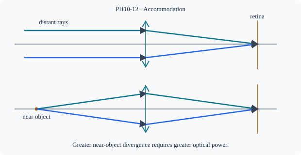

Prerequisite bridge
PH10-06
Before starting, identify the reference frame, directed rays, units and applicable geometric assumptions. Unbound prerequisites remain provisional.
Connected textbook foundation (preserved from PR #5)
13. The human eye forms a real image
The cornea and crystalline lens contribute to focusing light onto the retina. The retinal image is real and inverted; perception is not described by the eye acting as a literal projector onto an external screen. The eye changes its optical focusing strength through accommodation, within physiological limits.
For a distant object, incoming rays are approximately parallel; for a nearby object, the incoming rays diverge more strongly. A healthy accommodating eye adjusts its optical system to maintain a focused retinal image across a range of distances. Optical geometry, retinal position and accommodation are therefore coupled.
Build and check the model
The eye's cornea and crystalline lens focus light onto the retina; the cornea provides much of the refraction and the crystalline lens changes its effective power through accommodation. The retina is at an approximately fixed image distance. For an ideal effective thin lens, 1/f=1/d+1/v with v fixed: a nearer object needs larger power (smaller f). The retinal image is real and inverted; perception is not an optical flipping of rays.
Worked anchor
Simplify retinal distance to 2.0 cm. For a distant object f≈2.0 cm (P≈50 D); for d=25 cm, P≈50+4=54 D, f≈1.85 cm. Actual eye uses multiple refracting surfaces and effective principal planes.
Condition and limiting check
The 25 cm near point is a conventional normal-eye reference, not a universal value. Accommodation range varies with individual and age.
Misconception repair
The retina does not move back and forth substantially to focus; optical power changes.
Reasoning diagram

Self-check before transfer
Retinal distance fixed at 2 cm. Additional power for an object 0.5 m away instead of infinity?
Check the reasoning
+2 D because 1/d=2 m⁻¹.
Source and figure status
Curriculum pointer CBSE10; candidate scope only. Preserved chapter manuscript. Original subtopic-specific figure attached. Scientific figure and teaching-sufficiency reviews remain HOLD.